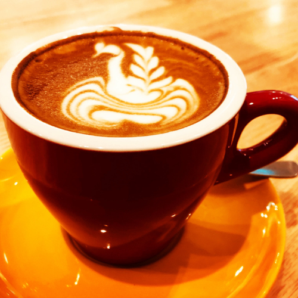
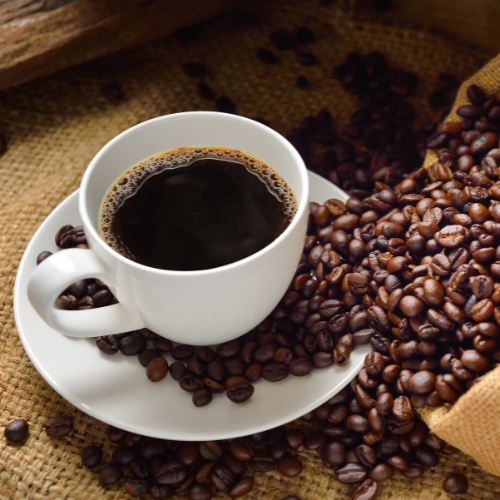
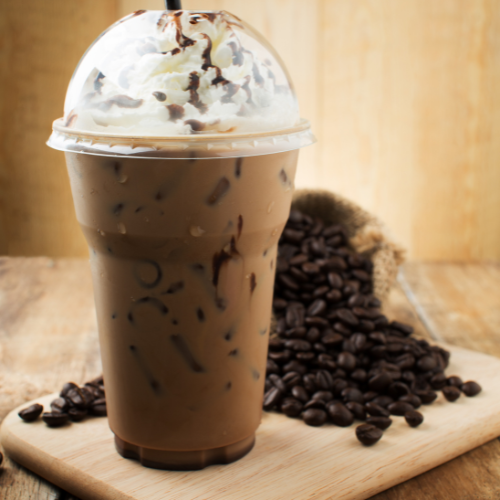
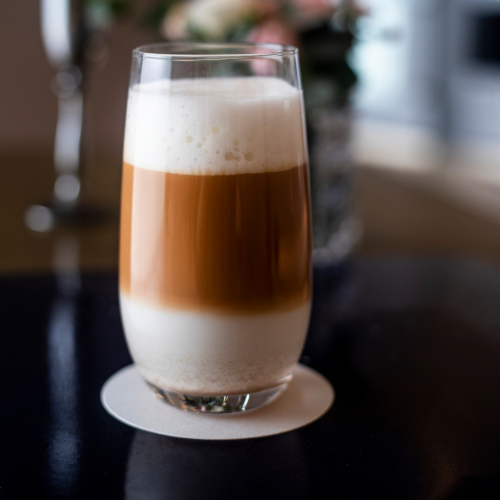

Espresso
Um café forte e concentrado feito ao passar água quente sob alta pressão através de grãos de café finamente moídos. É a base para muitas bebidas de café, como cappuccinos e lattes.

Latte
Um café feito com leite vaporizado e um pouco de espuma, adicionado a um tiro de espresso. O latte pode ser adoçado com açúcar ou xarope de sabor.

Capuccino
Um café feito com partes iguais de espresso, leite vaporizado e espuma de leite. O cappuccino é geralmente polvilhado com canela ou cacau em pó.

Americano
Um café feito adicionando água quente a um ou mais tiros de espresso. É uma opção mais suave para quem prefere um café mais diluído.

Mocha
Um café feito com espresso, leite vaporizado, espuma de leite e xarope de chocolate. Pode ser decorado com chantilly e raspas de chocolate.

Macchiato
Um café feito com uma pequena quantidade de leite vaporizado e um tiro de espresso. O leite é adicionado em pequena quantidade, apenas o suficiente para manchar o espresso.